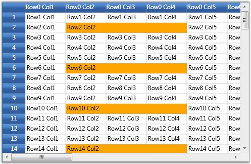

This event is used to define covered ranges in the required cells. It receives an argument of type GridQueryCoveredRangeEventArgs containing the following information about the event.
|
Property |
Description |
|
CellRowColumnIndex |
Represents the cell row and column indices. |
|
Range |
Defines the covered range for the cell. |
Example
This event can be triggered using the following code:
|
[C#]
grid.QueryCoveredRange += new GridQueryBaseStylesEventArgs (grid_QueryCoveredRange); |
Event Handler
|
[C#]
void grid_QueryCoveredRange(object sender, GridQueryBaseStylesEventArgs e) { // Combine column 2 to 4 on every 4th row. if (e.CellRowColumnIndex.RowIndex % 4 == 2) { if (e.CellRowColumnIndex.ColumnIndex >= 2 && e.CellRowColumnIndex.ColumnIndex <= 4) { e.Range = new CoveredCellInfo (e.CellRowColumnIndex.RowIndex, 2, e.CellRowColumnIndex.RowIndex, 4); e.Handled = true; } } } |
Output
The following output is generated using the code above.

Figure 97: QueryCoveredRange